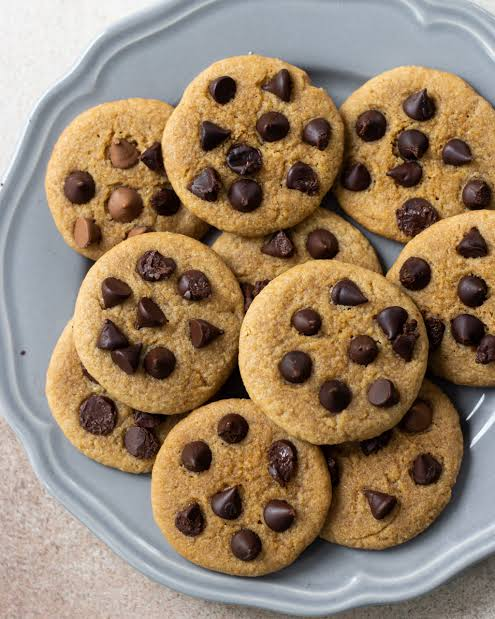

Home
Chocolate Chip Pancakes

Description
Fluffy chocolate chip pancakes are a simple and delicious breakfast made with a soft pancake batter and plenty of chocolate chips. They are easy to prepare and can be served with maple syrup, butter or fresh fruit
Ingredients
- All-purpose flour
- Baking powder
- Sugar
- Salt
- Milk
- Egg
- Butter
- Vanilla extract
- Chocolate Chips
Steps
- Mix the flour, baking powder, sugar, and salt in a bowl
- In another bowl, whisk together the milk, egg, melted butter, and vanilla extract
- Combine the wet and dry ingredients until just mixed
- Fold the chocolate chips into the batter
- Heat a lightly buttered pan over medium heat
- Pour some batter onto the pan and cook until bubbles form on the surface
- Flip the pancake and cook until golden brown
- Serve warm with your preferred toppings